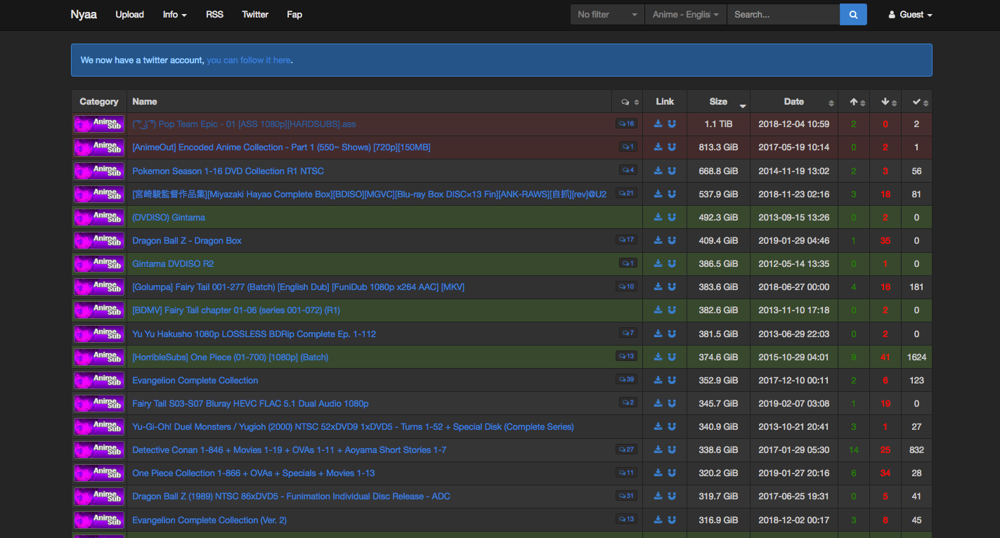

NYAA
Nyaa.si is a torrent website that focuses on free indie anime and video game content. The content specifically caters to the needs of the East Asian audience but it’s not limited to them. Most of the free indie content that you find on the website has a high demand in countries such as the US, Germany, Albania, Finland, Norway, Sweden, and other parts of Europe as well. Nyaa.si has been in the torrent sphere for a long time.
Most of the free indie content that you find on Nyaa can be downloaded quickly primarily because it has a lot of seeds. More seeds mean better download speed. And thus, Nyaa does provide a commendable download speed because of the seeds. Nyaa also has a sister site referred to as ‘Sukebei’ which caters to different audiences, the one which likes adult movies and free indie games. When you visit Nyaa, you’ll have an option in the header section known as ‘Fap’, upon clicking that option, you’ll be able to access ‘Sukebei’.
Content
Nyaa
- Rating: N/A
- Year Founded: 2005
- Monthly Visitors: N/A
- Download Speed: N/A
History
NyaaTorrents draws inspiration from a Japanese onomatopoeia for cat’s meow. In 2014, the site was a target of a large DDoS attack. Three years later, it entered Alexa’s 1000 most popular websites on the Internet.
Nyaa.si operates on BitTorrent and is geared towards Japanese, Korean, and Chinese audiences. It is the world’s biggest free indie anime-dedicated torrent index.
Content and Features
Sign-up is Optional – The most trustworthy torrent sites are the ones that don’t require you to sign-in. And Nyaa.si being one of them doesn’t ask you to sign-up. You can visit the site, and start downloading the free indie content from the inner page without signing up at all. You can do so as a guest. This feature is always appreciated as most of the time, you don’t want to give away your email address to a site you cannot trust.
Dark Mode – 2019 brought a huge wave of dark mode with it. People went crazy and wanted all the platforms to have this mode. Since torrent sites are your usual platforms or networking community, it’s positive to see the developers taking the demand into consideration. To enter the dark mode, you can scroll all the way to the bottom and just click on the ‘on/off’ switch and you’re done.
Diverse Categories – The most fascinating aspect of torrent sites is that you get plenty of categories. You can choose what’s best for you and have a lot of freedom in doing so. On Nyaa.si, you can choose from various Anime options – ‘Anime Music Video’, ‘English-translated’, ‘Non-English translated’, and ‘Raw’. You can choose between ‘Lossless’, and ‘Lossy’ Audio. Other than that, you get to decide on Literature, Live Action, Pictures, Software i.e. Games and Application alongside other options.